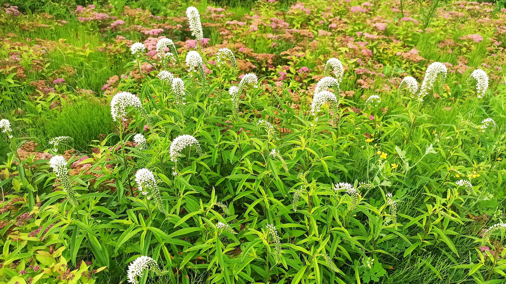
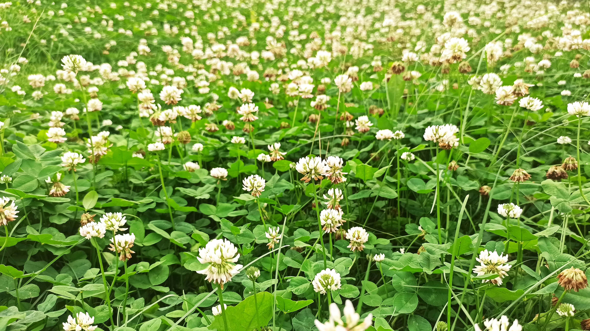

植物介绍
─
狼尾花

学名
Lysimachia barystachys Bunge
形态特征
- 生活型：多年生草本丛生植物。
- 枝：秆直立。
- 叶：叶片线形，先端长渐尖，基部生疣毛。
- 花：圆锥花序直立，主轴密生柔毛；刚毛粗糙，淡绿色或紫色；小穗通常单生，偶有双生，线状披针形；花具三雄蕊，花药顶端无毫毛；花柱基部联合。
- 果：颖果长圆形。
山杏
学名
Prunus sibirica L.
形态特征
- 生活型：灌木或小乔
- 茎：树皮暗灰色；
- 叶：叶片卵形或近圆形，先端长渐尖至尾尖，基部圆 形至近心形，叶边有细钝锯齿
- 花：花单生，先于叶开放；花萼紫红色；花瓣近圆形 或倒卵形，白色或粉红色；
- 果：果实扁球形，；果肉较薄而干燥，成熟时开裂， 成熟时沿腹缝线开裂；核扁球形，易与果肉分离
白车轴草

学名
Trifolium repens L.
形态特征
- 生活型：短期多年生草本
- 茎：茎匍匐蔓生，上部稍上升，节上生根，全株 无毛
- 叶：掌状三出复叶；托叶卵状披针形；叶柄较长； 小叶倒卵形至近圆形
- 花：花序球形，顶生；总花梗甚长；无总苞；苞 片披针形；花冠白色、乳黄色或淡红色
- 果：荚果长圆形；种子通常3粒。种子阔卵形。
鹅肠菜
学名
Stellaria aquatica
形态特征
- 生活型： 多年生草本，长达80厘米；
- 株： 长达80厘米；
- 茎： 茎外倾或上升，上部被腺毛；
- 叶： 叶对生，卵形，先端尖，基部近圆或稍心形， 边缘波状；上部叶常无柄；
- 花： 花白色，1歧聚伞花序顶生或腋生
- 果： 蒴果卵圆形，较宿萼稍长
- 种子： 种子扁肾圆形，径约1毫米，具小疣；
水蓼
学名
Persicaria hydropiper
形态特征
- 生活型： 一年生草本；
- 株： 高达70厘米；
- 茎： 茎直立，多分枝，无毛；
- 叶： 叶披针形或椭圆状披针形，先端渐尖，基部楔 形，叶腋具闭花受精花，托叶鞘具缘毛；
- 花： 穗状花序下垂，花稀疏，花被(4)5深裂，绿色， 上部白或淡红色，椭圆形；雄蕊较花被短
- 果： 瘦果卵形，扁平； ：
黄刺玫
学名
Rosa xanthina Lindl
形态特征
- 生活型：乔木
- 枝： 枝密集，披散;小枝无毛，有散生皮刺，无针刺；
- 叶：小叶宽卵形或近圆形，稀椭圆形，先端圆钝，基部宽楔 形或 近圆，有圆钝锯齿叶轴和叶柄有稀疏柔毛和小 皮刺；托叶带状披针形，大部贴生叶柄，离生部分耳状
- 花：花单生叶腋，重瓣或半重瓣，黄色，无苞片；花萼外面 无毛；萼片披针形，全缘：花瓣宽倒卵形；花柱离生；
- 果： 蔷薇果近球形或倒卵圆形，熟时紫褐或黑褐色，无毛；